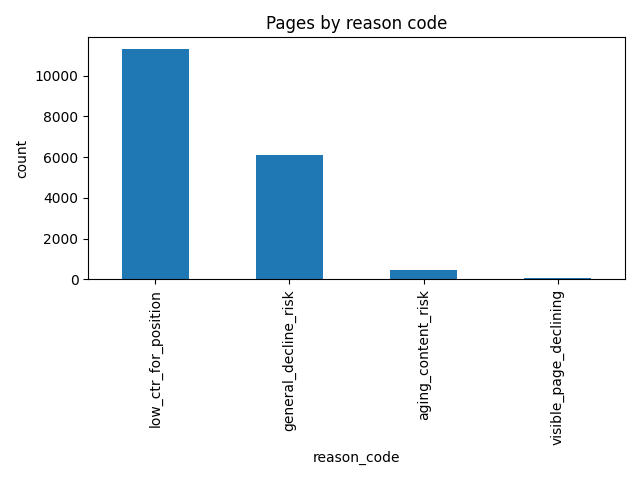

Abdullah Rasheed · FlyRank ML Internship 2026 · Lane 2: Refresh / Content Opportunity Scoring
Content teams with limited review capacity need a way to decide which pages to check first. A simple hand-written rule can work, but it can only combine a couple of signals at a time. This project asks: can a trained model, using only information known before a decision is made, produce a better-ranked review queue than a simple rule, on real search performance data?
fact_content_daily_performance, dim_content, dim_clientshealth_score, priority_score, action_type — these are the product's own decisions, not raw observed data, and using them would just teach a model to copy existing rulesLabel: a page is labeled "declining" if its impressions dropped more than 20% from the first half of March to the second half.
Features (all built only from the first half of March, so nothing from the label window leaks in): average impressions, average search position, average CTR, word count, and content age in days.
Baseline: a transparent rule comparing each page's CTR to the average CTR for its position tier — the bigger the gap, the higher the score.
Model: a Random Forest classifier, chosen for its ability to combine multiple signals and provide feature importance.
Validation: a client-grouped split, so no client appears in both training and test data. This avoids the model memorizing one client's specific pattern instead of learning something that generalizes.
Leakage check: an early version of the impressions feature used the full month, including the second half the label was built from. This produced a near-perfect but meaningless score. It was caught and fixed by restricting all features to first-half-of-month data only.
| Metric | Baseline rule | Random Forest model |
|---|---|---|
| Precision@20 | 0.300 | 0.650 |
| Precision@50 | 0.260 | 0.700 |
On this client-held-out test split, the model outperformed the baseline rule at both cutoffs. This is an observed, directional result on one split of one month of data, not a guarantee that it will always outperform the baseline on other data.

Most flagged pages fall under low_ctr_for_position, meaning they already have visibility but are not converting it into clicks — consistent with the pattern found in the earlier baseline signal check.
| Reason code | Recommended action |
|---|---|
| low_ctr_for_position | Review title and meta description |
| aging_content_risk | Schedule a content refresh |
| visible_page_declining | Prioritize for review this week |
| general_decline_risk | Monitor, low urgency |
Should never be automated: auto-deleting or unpublishing a page based on this score, auto-rewriting content without human review, or making client-facing promises based on this score alone. A human reviewer should always confirm a page's current traffic and check for confounding factors (site redesigns, competing pages) before acting.
All notebooks, data contracts, and code for this project are available in the public repository:
github.com/AbdullahRasheed452/ML-Internship
Key notebooks: work/notebooks/w03_data_contract.ipynb, w04_baseline_score.ipynb, w05_model.ipynb, w06_validation_audit.ipynb, w07_action_playbook.ipynb, capstone.ipynb